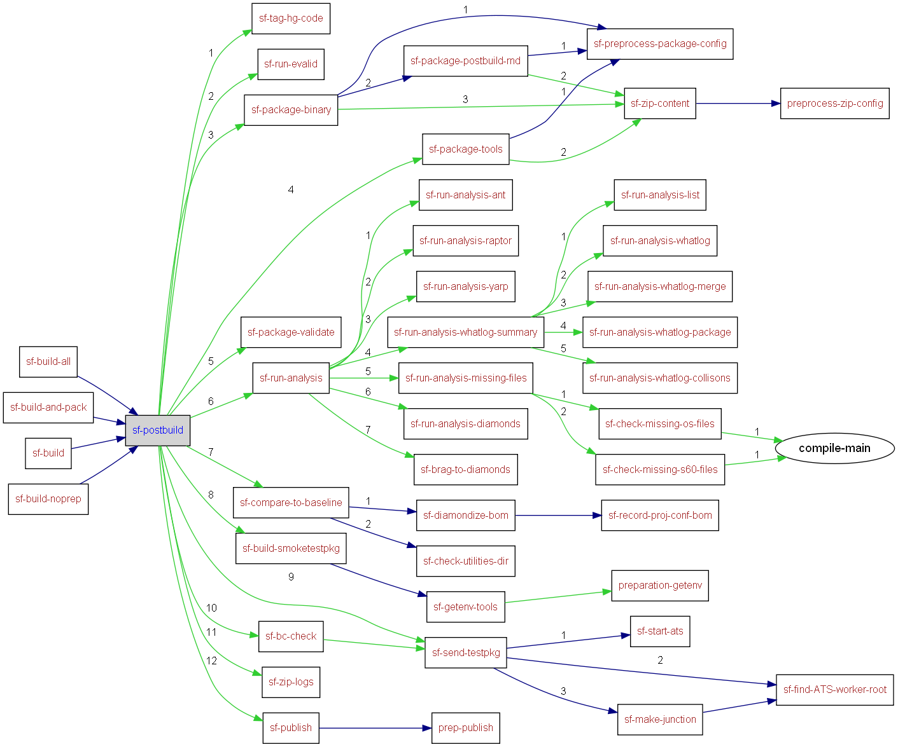

|
Helium API | ||||||
| prev next | frames no frames | ||||||
Location
d:\maintools\sf-config\common\build.postbuild.xml:3:
Conditional execution
No conditions on target execution.
| Name | Edit status |
|---|---|
| User editable properties | |
| Internal properties | |

<target name="sf-postbuild">
<echo>[SF-POSTBUILD]</echo>
<parallel>
<!-- TAG SOURCE CODE -->
<if>
<istrue value="${sf.spec.tagafterbuild.enable}"/>
<then>
<echo message="Apply tag to the source code used in this build"/>
<runtarget target="sf-tag-hg-code"/>
</then>
</if>
<!-- Create MD5s -->
<if>
<istrue value="${sf.spec.md5.enable}"/>
<then>
<echo message="INFO Creating MD5s"/>
<runtarget target="sf-run-evalid"/>
</then>
</if>
<!-- Package up the binaries we built -->
<if>
<istrue value="${sf.spec.package.bin.enable}"/>
<then>
<echo message="INFO Packaging Binaries"/>
<runtarget target="sf-package-binary"/>
<runtarget target="sf-package-tools"/>
<echo message="INFO Validate Zip files"/>
<runtarget target="sf-package-validate"/>
</then>
</if>
<!-- run build analysis tools -->
<runtarget target="sf-run-analysis"/>
<if>
<istrue value="${sf.spec.publish.enable}"/>
<then>
<!-- Generate reports to compare this build to a previous one -->
<runtarget target="sf-compare-to-baseline"/>
</then>
</if>
</parallel>
<!-- Launch smoketest -->
<if><istrue value="${sf.spec.test.sendpkg.enable}"/>
<then>
<runtarget target="sf-build-smoketestpkg"/>
<runtarget target="sf-send-testpkg"/>
</then>
</if>
<!-- Launch BC check -->
<if><istrue value="${sf.spec.bccheck.enable}"/>
<then>
<runtarget target="sf-bc-check"/>
</then>
</if>
<!-- Zip up all the logs -->
<runtarget target="sf-zip-logs"/>
<!-- Publish logs/reports -->
<if>
<istrue value="${sf.spec.publish.enable}"/>
<then>
<echo message="Publish log files and reports to ${sf.spec.publish.rootdir}"/>
<runtarget target="sf-publish"/>
</then>
</if>
</target>
|
Helium API | ||||||
| prev next | frames no frames | ||||||